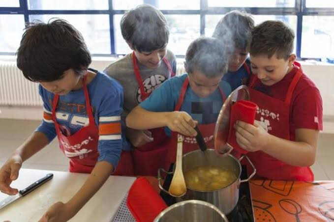
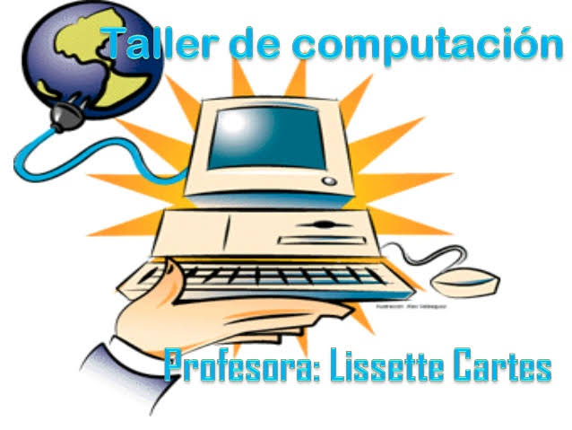
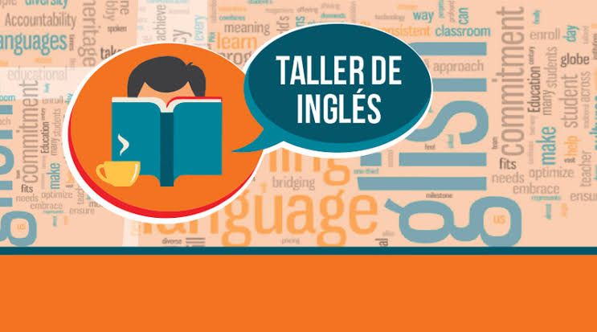

|  |  | Taller de Gastronomía El taller de Gastronomía brinda a los estudiantes un ambienteque les permita aprender sobre la cocina peruana e internacional en un taller totalmente equipado con instrumentos, equipos y materiales de última generación De esta manera los estudiantes van a poder aprender mediante la práctica la gastronomía, códigos de etiqueta, catering, entre otros. Adicionalmente, el plan de estudio hace énfasis en la parte práctica para garantizar que los alumnos sean totalmente competentes en el futuro. |
Taller de computación Este taller pretende introducir a las estudiantes interesadas en elfascinante universo de la informática. De forma divertida y práctica, irán adquiriendo habilidad y experiencia en el uso del ordenador y se familiarizarán con los programas que más se adecuan a su edad e intereses. Esta introducción a las nuevas tecnologías sentará una sólida base en el niño que le permitirá, desde pequeño, desenvolverse con soltura en el mundo de la informática. |
|  | |
Taller de ajedrez Este taller permitirá a los asistentes aproximarse a la belleza ycomplejidad del ajedrez. En las clases, se analizarán sus componentes esenciales y se llevarán a la práctica aspectos como el juego de aperturas, los planes de posición, las posibles combinaciones y la técnica en las finalizaciones de las partidas. Todo ello se impartirá en dos niveles, avanzado e iniciación, para permitir una mejor adecuación al nivel inicial de cada alumno. | Taller de ingles El propósito de este taller es acercar a los alumnos y apoderados al idioma, desarrollando habilidades y destrezas para mejorar el aprendizaje del inglés desde el nivel inicial, además se espera potenciar la comunicación de sensaciones, vivencias y emociones, a través del uso lenguaje no verbal y verbal. |